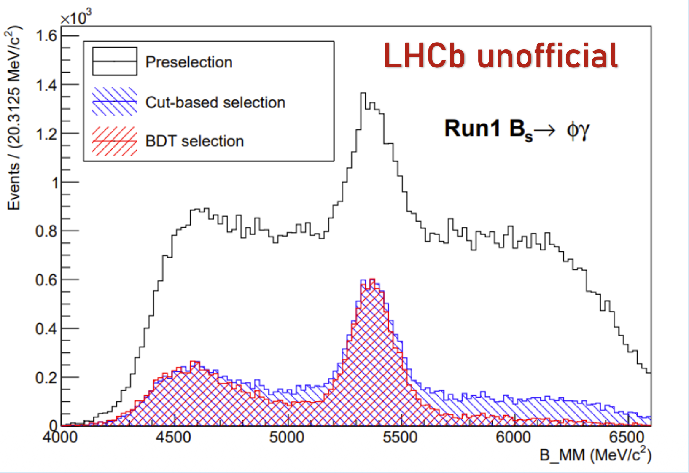
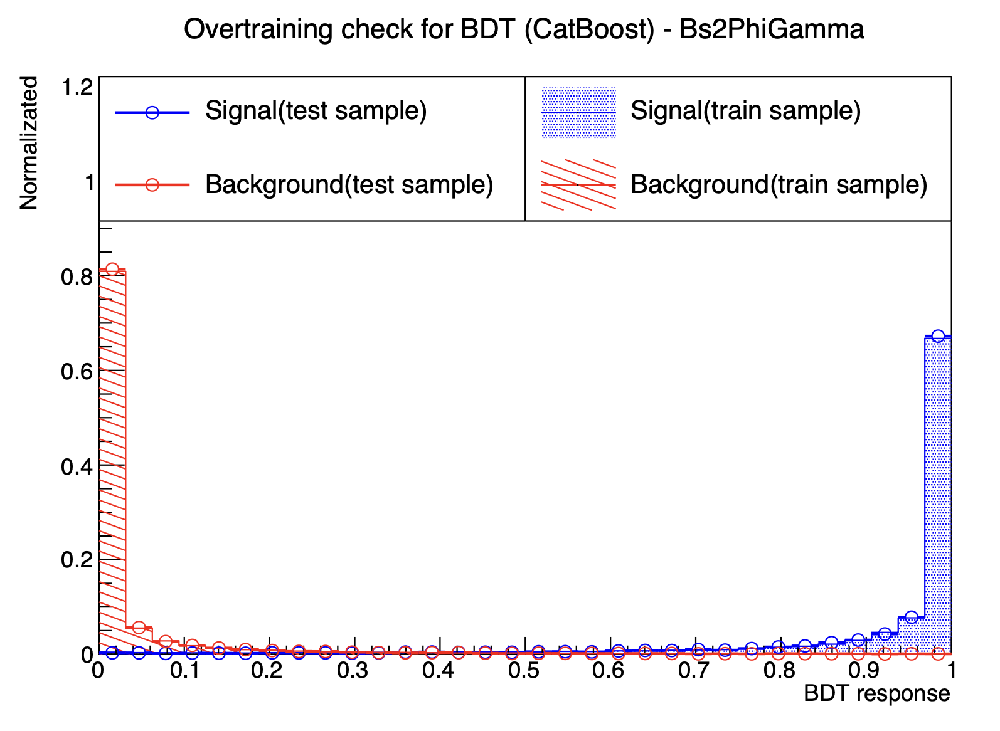
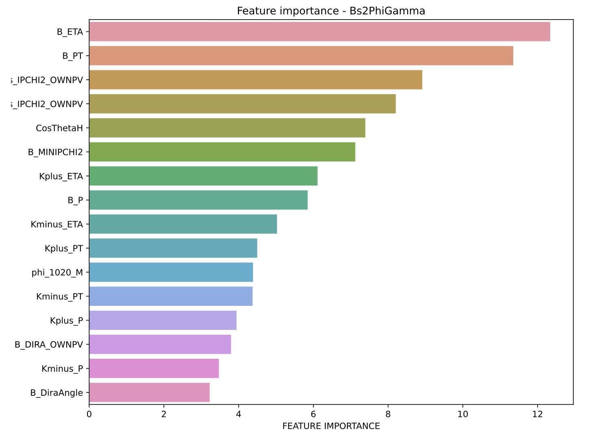

01
Domain Adaptation for ML
Built a CatBoost selection workflow for the rare Bs → phi gamma signal, connecting simulation/data checks, feature selection and five-fold training/testing to a threshold chosen for expected measurement precision.

Task and individual contribution
The goal was to select a rare signal from combinatorial background for a physics measurement. I developed the selection and validation workflow. I used existing Monte Carlo signal samples with detector simulation and reconstruction consistent with the data; I did not develop the original simulation software for these samples, although I studied calorimeter-simulation code.
Data preparation and domain checks
- Applied preselection to reduce combinatorial background, then used fitted-component sWeights to study signal distributions statistically in mixed data. This did not provide pure signal labels for individual data events.
- Proposed features from the decay physics, detector performance and subdetector observables. Used a topologically similar control sample to investigate simulation/data discrepancies and trained a hep_ml gradient-boosting reweighter where needed.
- Checked correlations between features and with the target observable, excluding strongly correlated candidates to reduce the risk of distorting the measurement.
Training and choosing an operating point
- Trained with simulated signal in the signal region and real-data background away from that region. Used five folds to make use of limited signal and background statistics.
- Examined feature importance and ROC/AUC, removed low-contribution features and tuned hyperparameters for the retained feature set. Compared training and test responses to diagnose overtraining.
- Scanned a task-specific figure of merit using signal/background efficiencies and expected event statistics. Chose the operating point for expected statistical precision and applied it to real data.
Expected yields and sample roles
At each threshold, estimated the signal and combinatorial-background yields as S = S0 × effs and B = B0 × effb, where S0 and B0 came from fitting the preselected data. These estimates were cross-checked against luminosity and process-cross-section expectations.
Reweighting preceded classifier training. Each training round used five folds with separate training and testing partitions; early rounds selected features, followed by hyperparameter tuning with the feature set fixed. The final application sample was not used for classifier training or hyperparameter tuning.
The scanned criterion was FOM = S / sqrt(S + B). Efficiency estimates used the combined training and testing events after KS checks showed compatible train/test responses and performance. Final model assessment came from the five-fold validation results; no additional untouched labelled test sample was available. These checks support train/test compatibility, without establishing an independent final generalisation estimate.


Result and transferable method
The selected working point was applied to data. The displayed comparison shows background suppression, and the training/test response plot supports the validation study. The transferable contribution is an analysis workflow linking domain knowledge, sample mismatch, model complexity and the decision threshold to the final task objective.
Publications & Reports
- [Internal note: Measurement of the branching fraction ratio between B0 → K∗0γ and Bs0 → ϕγ decays using the full LHCb dataset] contains the CatBoost selection, reweighting and validation work.
Impact: connected data quality, model selection and the operating threshold to the precision objective of a rare-signal measurement.
Industry relevance: Applied ML | Dataset Shift | Decision Optimisation